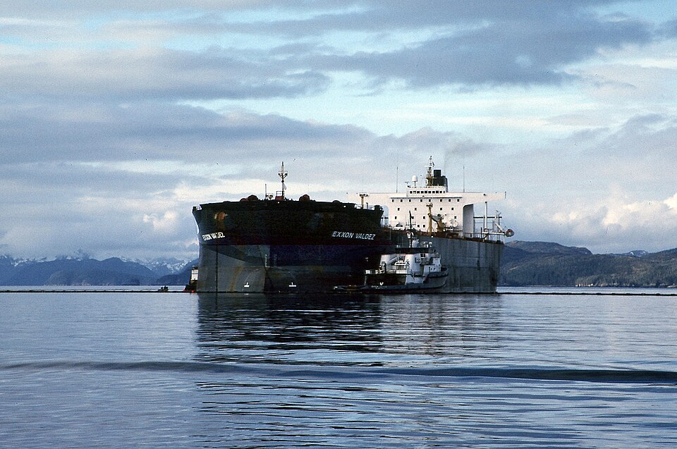

DOSSIER A42-CE-45 // CLIMATE & ENVIRONMENT
Exxon Valdez spill and cleanup claims

.jpg){kind=link}
The claim
Claim: long-term damage was concealed or cleanup fully succeeded. Oil and lasting ecological effects are documented, with recovery varying by species. This file tests the narrow allegation rather than treating secrecy, coincidence, or public controversy as evidence by themselves.
Chronology
Tanker grounded on 24 March 1989 and spilled millions of gallons; cleanup, litigation, and restoration continued for decades. Chronology helps separate contemporaneous knowledge from later interpretation; sequence alone cannot establish a causal relationship.
Primary record and data
NOAA, court records, government assessments, and ecology studies document oil distribution; recovery definitions differ. Original records establish what was measured or decided, while independent work is needed to test methods and institutional conclusions.
Independent scientific evidence
Oil persisted in sediments; weathering, habitat, predation, and cleanup shaped ecosystem response. Convergent observations and a plausible mechanism carry more weight than a single image, anecdote, or disputed quotation.
Alternative explanations
Species may recover while food-web effects persist; monitoring is patchy and endpoints differ. A strong alternative must explain the observations and remain open to disconfirmation; ordinary causes deserve the same scrutiny as extraordinary ones.
Limitations and uncertainty
Historical exposure and health records are incomplete and uneven; causal attribution, corporate knowledge, and intent are separate questions requiring separate evidence. Uncertainty is stated explicitly rather than treated as support for the strongest version of a claim.
Calibrated verdict
Spill and cleanup limits are clear; both total collapse and complete recovery oversimplify. Documented research, emissions, negligence, or secrecy should not be conflated with a broader unsupported coordinated plot.
Testable evidence requirements
Compare shoreline samples, wildlife data, company assessments, and long-term endpoints consistently. A persuasive claim specifies what new evidence would change the assessment and allows independent replication, including negative results.
Sources and source limits
- NOAA, Exxon Valdez SpillMonitoring and restoration records.
- National Academies, Exxon Valdez Fate and EffectsIndependent ecosystem review.
- Alaska Department of Fish and GameState monitoring; recovery differs by species.